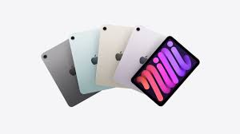
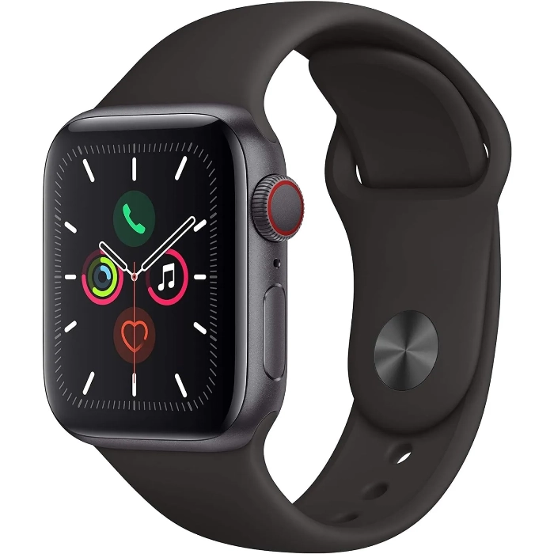

Az Apple Inc. vállalatot 1976-ban alapította Steve Jobs, Steve Wozniak és Ronald Wayne az Amerikai Egyesült Államokban. A cég kezdetben személyi számítógépeket készített egy garázsban.
Az első sikeres termékük az Apple II számítógép volt, amelyet sok iskola és vállalat használt. Később megjelent a Macintosh számítógép, amely az egyik első grafikus felületű számítógép lett.
2001-ben az Apple bemutatta az iPod zenelejátszót, amely forradalmasította a zenehallgatást. 2007-ben megjelent az első iPhone, amely teljesen átalakította az okostelefon-piacot.
A vállalat ma a világ egyik leggazdagabb és legismertebb technológiai cége
| iPhone | iPad | Macbooks | Apple Watch |
Az iPhone az Apple okostelefonja.
Jellemzői:
|
Az iPad jellemzői:
|
A MacBook jellemzői:
|
A apple Watch jellemzői:
|

|
 |

|
 |